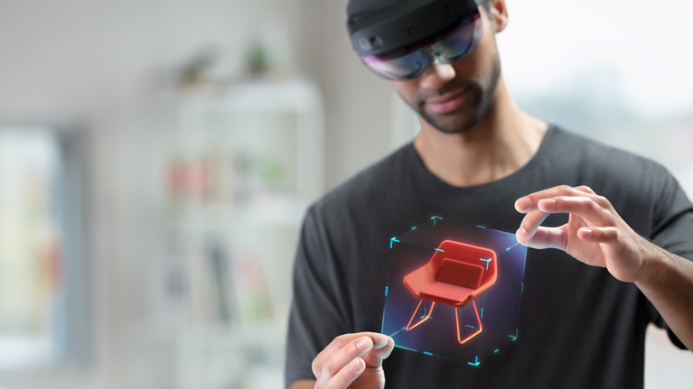
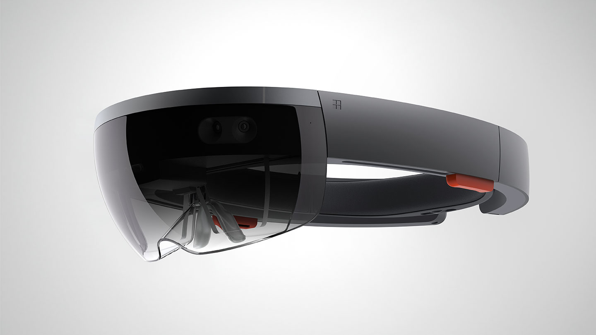
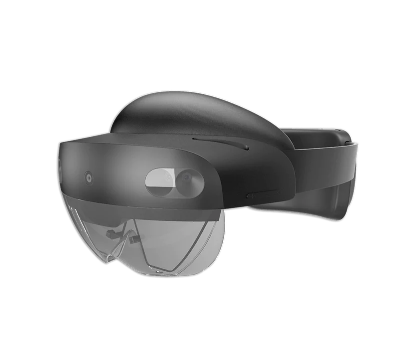

¿Qué es?
HoloLens es un dispositivo de realidad aumentada desarrollado por Microsoft que potencia la interacción de manera drástica. Se trata de unas gafas que crean una realidad aumentada holográfica (smartglasses): se adaptan al movimiento de los ojos y escanean el entorno real en el que se encuentran para construir un perfil virtual muy novedoso, y que lleva la realidad aumentada a un nuevo nivel.
Las posibilidades que ofrece este dispositivo son muy amplias. Nos permite visualizar elementos multimedia, ejecutar programas o realizar videollamadas, entre otras cosas, en un entorno de realidad aumentada, interactuando a través de gestos naturales realizados con nuestras manos, o a través de reconocimiento de voz. También podemos compartir la información con la que interactuamos con otras personas.
HoloLens es usado en sectores como la fabricación, la construcción, la atención sanitaria y la educación, en dónde se han conseguido buenos resultados, aumentando la eficacia y la efectividad de manera notable.
La primera versión de HoloLens fue lanzada el 30 de marzo de 2016. Desde entonces, la disponibilidad de este dispositivo se limita al sector comercial, ya que no hay versiones disponibles para el consumidor cotidiano de forma personal.
Funciones
Spatial mapping
HoloLens escanea el entorno en el que está presente y realiza una representación de la superficie real, con la que interactuarán los elementos virtuales.
Interacción natural
El proceso de interacción con los hologramas generados de forma virtual se realiza con gestos naturales a través de las manos.
Sonido espacial
La percepción del sonido se realiza desde diferentes puntos sin que haya aislamiento del entorno.
Reconocimiento de voz
La interacción con HoloLens también puede realizarse a través de comandos de voz.
Comparte hologramas
HoloLens tiene la capacidad de compartir los hologramas que proyecta con otros dispositivos digitales.
Seguimiento de los ojos
Adaptación al movimiento de los ojos, se escanea la superficie del ojo y se hace un seguimiento del movimiento realizado por estos.

Spatial anchors
Se establecen puntos de referencia a los que asociar una información determinada.
Autenticación biométrica
Lectura y reconocimiento del iris para el proceso de autenticación.
Soluciones
Colaboración remota entre empleados
Creación de instrucciones visuales para la realización de trabajos
Colaboración digital en tiempo real

Uso de programas de terceros
Beneficios
Ahorro de tiempo

Ahorro de costes
Mejora de la productividad
Mejora de la profesionalidad de los empleados
Especificaciones técnicas
Pantalla
Óptica: Lentes holográficas transparentes (guías de ondas)
Resolución: 2.000 motores de luz 3:2
Densidad holográfica: >2.500 radiantes (puntos de luz por radián)
Representación basada en los ojos: Optimización de la pantalla para la posición 3D del ojo
Sensores
Seguimiento de la cabeza: 4 cámaras de luz visibles
Seguimiento de los ojos: 2 cámaras de infrarrojos
Profundidad: Sensor de profundidad de tiempo de vuelo de 1 MP
IMU: Acelerómetro, giroscopio, magnetómetro
Cámara: Imágenes fijas de 8 MP, vídeo 1080p30
Audio y voz
Matriz de micrófonos: 5 canales
Altavoces: Sonido espacial integrado
Comprensión humana
Seguimiento de la mano: Modelo totalmente articulado de dos manos, manipulación directa
Seguimiento de los ojos: Seguimiento en tiempo real
Voz: Comandos y controles en el dispositivo; lenguaje natural con conexión a Internet
Windows Hello: Seguridad de nivel empresarial con reconocimiento de iris
Comprensión del entorno
Seguimiento 6DoF: Seguimiento posicional a escala mundial
Cartografía espacial: Malla de entorno en tiempo real
Captura de realidad mixta: Fotos y vídeos de hologramas y entornos físicos mixtos
Cálculo y conectividad
SoC: Seguimiento posicional a escala mundial
HPU: Unidad de procesamiento holográfico personalizada de segunda generación
Memoria: DRAM LPDDR4x DE 4 GB
Almacenamiento: UFS 2.1 de 64 GB
Wi-Fi: Wi-Fi 5 (802.11ac 2x2)
Bluetooth: 5
USB: USB tipo C
Ajuste
Tamaño único: Sí
Se adapta a las gafas: Sí
Peso: 566 g
Software
Sistema Operativo Holográfico de Windows
Microsoft Edge
Dynamics 365 Remote Assist
Guías de Dynamics 365
Visor 3D
Potencia
Duración de la batería: 2-3 horas de uso activo
Carga: USB-PD para una carga rápida
Refrigeración: Pasiva (sin ventiladores)
HoloLens 1
Lanzado el 30 de marzo de 2016, se trata de la primera versión comercial para empresas y de un modelo aún algo primitivo que tuvo muchos problemas en su momento, las mayores diferencias con su sucesor son:
-Menor campo de visión (field of view o FOW) con 30º de visibilidad.
-El FOW reducido provoca que el usuario tenga que girarse en varias ocasiones para ver el resto de elementos.
-Más incómodo, sin correa ni rueda de ajuste, lo que puede provocar dolores de cabeza tras usarlo mucho tiempo.
-No tiene sistema de seguimiento ocular, lo que empeora el proceso de interacción.
HoloLens 2
Presentado por primera vez el 24 de febrero de 2019 y lanzado ese mismo año en el 7 de noviembre, se trata del sucesor de HoloLens 2. Mejora muchas de las características de HoloLens y soluciona algunos problemas, aunque aún presenta inconvenientes y no está disponible para el uso cotidiano. Las mayores diferencias con su predecesor son:
-Ampliación del campo de visión o FOW a 50º.
-Más ergonómico, con menor peso y más cómodo, se hace más agradable usarlo.
-Dispositivo ajustable, se añade una rueda de ajuste para poder adaptar el dispositivo a la cabeza del usuario.
-Se añade el sistema de seguimiento ocular, mejorando la experiencia de interacción.
-La cámara tiene cuatro veces más megapíxeles, mejorando la resolución en el dispositivo.
-Un micrófono más, en comparación a los cuatro del primer HoloLens.
Bibliografía
Microsoft - HoloLens Microsoft - Características HoloLens NSFlow - Microsoft HoloLens 2: main features, use cases, benefits PlainConcepts - HoloLens 2 Filmora - Análisis HoloLens 2 Microsoft - HoloLens, información general 4Experience - HoloLens 1 vs HoloLens 2, what's new? Versus - Microsoft HoloLens vs Microsoft HoloLens 2 Microsoft - Funcionalidades y soluciones de HoloLens 2